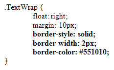
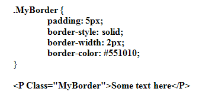
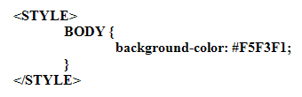
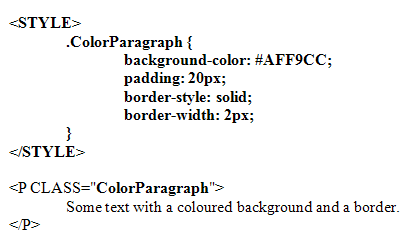
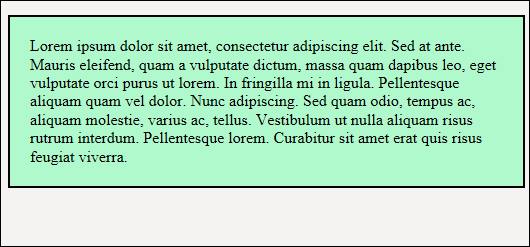
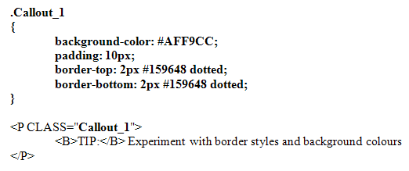
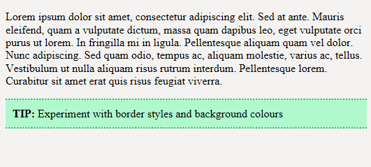

CSS Image Borders
You can have a nice border around your images. There are quite a lot of CSS borders to choose from. But not all are supported in every browser. For example, the border style inset might work OK with a black border in Firefox but not Internet Explorer. (Most border styles should work OK, though.)
The border properties you'll use the most are these:
border-style
border-width
border-color
The border style values you can use are these (you can also use outset, hidden, and none, but we won't):
dotted
dashed
solid
double
groove
ridge
inset
Border width comes in three flavours: thin, medium and thick. But you can also specify a width in pixels.
The Border colour can be something like "red" or a hexadecimal/rgb value.
Exercise
Add the following to your TextWrap style:

Here, we've set a solid border with a width of 2 pixels. We've also set a colour.
Save and refresh in your browser to see what it looks like.
Exercise
Try the other border styles mentioned above. Experiment with the width and colour
values to see how they work.
You can add a CSS border to other HTML elements. For example, if you wanted a border around a paragraph of text, set up a style and add it to the P tag. Like this:

(The padding property above will get you some space between the border and the text.)
The Background CSS Property
HTML elements can have a Background property set. (By elements we mean just about anything between the two BODY tags.) The BODY tag itself can take the Background property. For example, if you wanted a light cream page instead of plain white, you can use the background-color property. Like this:

With this style, the whole of the page will be a different colour. That's because we applied it to the BODY tag itself.
You can also set up a CSS class and just colour a paragraph, with perhaps a border around it:

The result would look like this:

Here, we have a green colour for the text background. The border has 20 pixels of padding between the border and the text. This kind of styling is good for things like callout boxes, when you want to emphasise a particular point. You could even have a fancy callout box, if you experiment with the CSS border properties:

The result of the above code would be this:

Notice how we've used three CSS values with one property:
border-top: 2px #159648 dotted;
border-bottom: 2px #159648 dotted;
We've set a border width, then a colour, then a border style. Each value is separated by a space.
In the next lesson, you'll learn about CSS and background images.